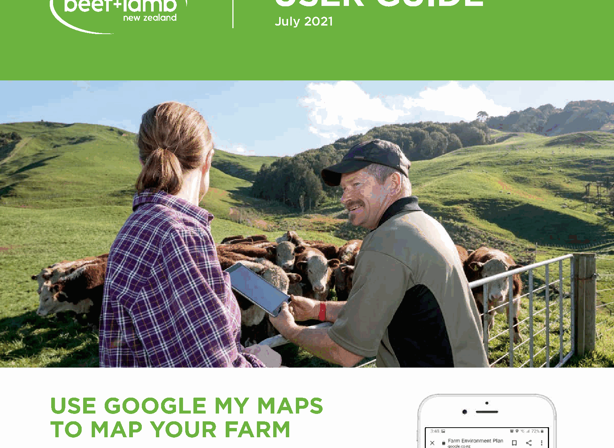
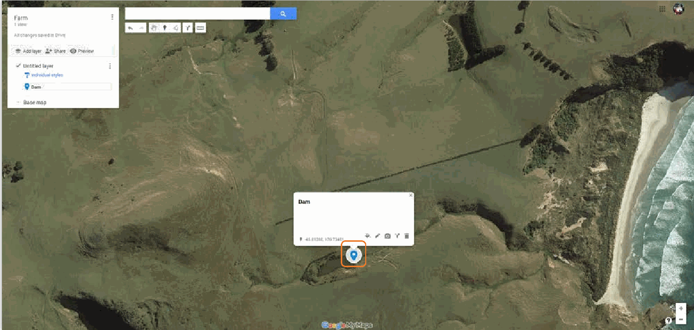
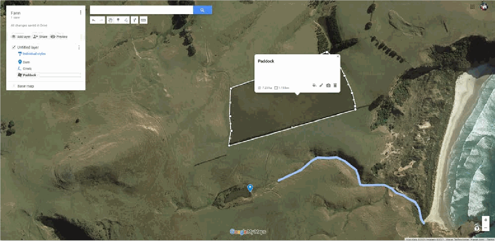
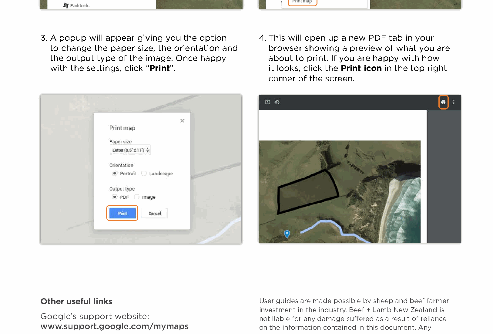

Unit 1: Mapping the School Farm (3 weeks)
Introduction
Google My Maps is a free tool for creating a farm plan, measuring distances and areas, and recording work done on the property. This guide helps you map our school farm features and plan future work.

Learning Goals
- Create a digital farm map using layers.
- Add points, lines, and areas with clear labels.
- Measure distances and paddock areas accurately.
- Export or print a clean map for your workbook.
1. Getting Started
- Go to https://www.google.co.nz/mymaps and sign in to your Google account. If you do not have an account, create one.
- Click “Create a new map”.
- Click “Untitled map” to rename your map (for example, “Kaikorai Valley College School Farm”).
2. Set Up Layers
Layers let you separate existing features from proposed work. You can turn layers on or off using the checkbox next to each layer.
- Rename the first layer to Existing. Use this for current paddocks, dams, fences, buildings, and water points.
- Click “Add layer” and name it Proposed for future work such as new planting or fencing.

3. Locate the Farm
- Use the search bar to type in the school address, or zoom using the mouse wheel and the + / - buttons.
- Click the arrow next to Base map and choose Satellite for a clear aerial view.
4. Add Farm Features
A. Markers (Point Features)
Use markers for water tanks, sheds, gates, troughs, or trees.
- Click the Marker icon under the search bar.
- Click the exact spot on the map.
- Give the marker a clear title, then save.

B. Lines (Fences, Tracks, Waterways)
- Click the Line icon (right of the marker icon) and choose “Add line or shape”.
- Click along the path of the fence or creek.
- Press Enter to finish the line and add a title.

C. Areas (Paddocks, Orchards, Bush)
- Start the same way as a line.
- Click around the boundary and then click the starting point to close the shape.
- Add a title and save.
D. Edit or Delete Features
After saving a feature, a popup lets you edit color, line width, transparency, and description. You can also attach a photo or delete the feature using the trash bin icon.
5. Measure Distances and Areas
The Measurement tool (ruler icon) helps you check distances or paddock sizes.
- Click the ruler icon on the far right of the toolbar.
- Click a starting point, then add points to measure a path.
- For a polygon, close the shape to see both perimeter and area (in hectares).
- Press Enter to finish a straight line measurement.
- To stop measuring, click the hand icon or click anywhere on the screen.

6. Export or Print Your Map
Option A: Print Map (Recommended)
- Click the three vertical dots next to your map name.
- Choose “Print map”.
- Pick paper size, orientation, and output type, then click Print.
- A new PDF preview opens in your browser. Use the print icon to save as PDF or print.

Option B: Screenshot (Snipping Tool)
Windows
- Open Snipping Tool from the Start menu search.
- Click New, then drag to select the area.
- Save the image and insert it into your workbook.
Mac
- Press Shift + Command + 4.
- Drag to select the area.
- The screenshot saves to the desktop for inserting into your workbook.
Map Checklist
- Your map has a clear title.
- Layers include Existing and Proposed.
- Features are labeled with correct names.
- At least one line and one area are mapped.
- Measurements are used to check a distance or area.
- Export is clean and readable.
Source and Further Help
- Adapted from Beef + Lamb New Zealand User Guide (July 2021). PDF: resources/use-google-my-maps-map-your-farm.pdf. Site: https://www.beeflambnz.com
- Extra help video: https://www.landcare.org.nz/resource-item/mapping
- Google My Maps support: https://support.google.com/mymaps